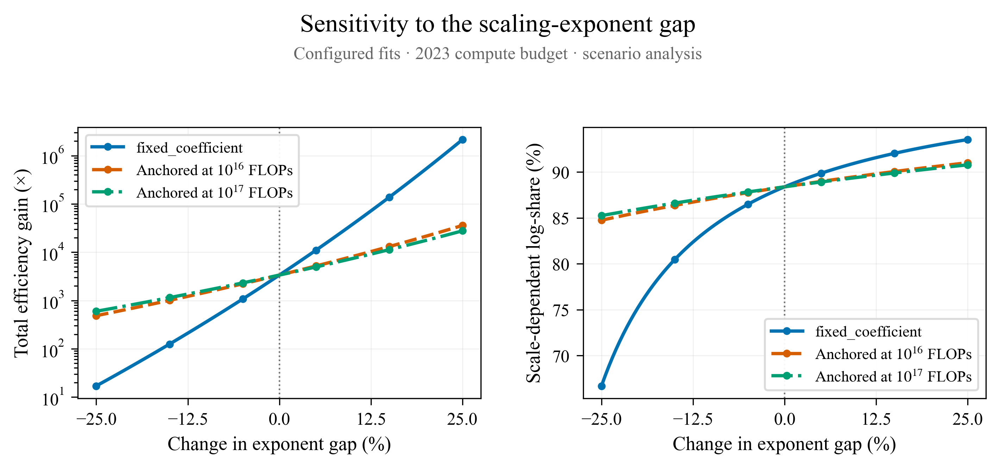
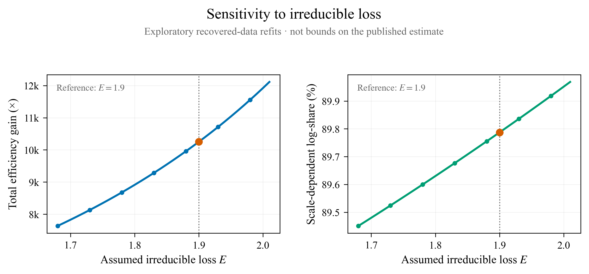
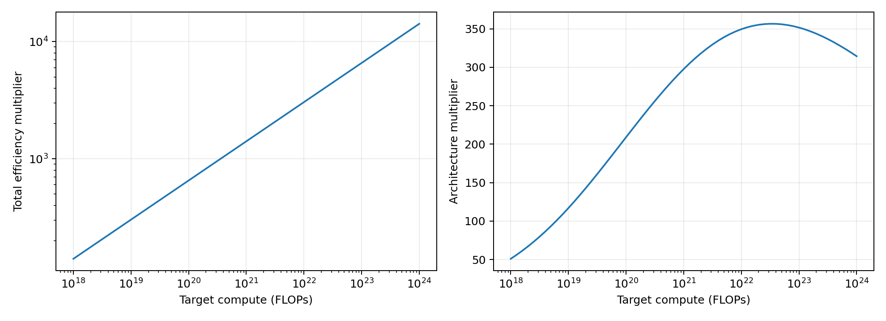

4 November 2026 · Independent analysis folder · Existing paper and robustness outputs were not edited.
The current graph configuration reproduces the paper's roughly 352× architecture gain and 3,360× total. Its original exponent perturbation can therefore be extended directly to absolute multipliers. Under −25%, baseline, and +25% gap changes, total gains are approximately 17×, 3,362×, and 2.16 million×. These are deterministic scenarios, not confidence bounds.
Raw-data analyses are exploratory, not ready to paste as uncertainty bounds on 3,360×. The configured data directory is absent in Experimental_Progress. Matching relative paths were recovered from Experimental_Progress_Old, but 3 of 26 configured files are missing. The recovered baseline is 10,251×, not 3,360×. Missing files, data vintage, and the different historical-transformer fit prevent claiming reproduction. No missing file was replaced with a similarly named experiment.
Original directory: /Users/hansgundlach/Documents/MITresearch/Experimental_Progress/experimental_analysis/how-bitter-graphs-new. sensitivity_analysis.py supplies the exponent sweep; utils.py supplies the decomposition; parameters.toml supplies baseline coefficients. The extensionless Irreducible_Sensitivity implements the loss-floor sweep. graphing_utils.py and experiments_config.py supply the raw fit machinery.
Copies are in source_snapshot/. Input CSV snapshots and original paths/hashes are in inputs/ and input_manifest.json. source_verification.json confirms originals still match their copied versions; all input hashes were rechecked. The scripts write exclusively into this new folder.
Here “absolute gains” means multiplicative efficiency factors, not a percentage share. The original code evaluates C = 10¹⁶ × 4.1¹⁰ = 1.3423 × 10²² FLOPs. With adjusted losses L−E = A Cᵅ, the scale-dependent factor is S = [(A₁₇ Cᵅ¹⁷)/Aᴸ]^(1/αᴸ) / C. The architecture component is S divided by the Chinchilla factor; total is S times the code's scale-invariant factor. Percentage share is log(S)/log(total).
| total | architecture | scale_dependent | chinchilla | share |
|---|---|---|---|---|
| 3,361.7 | 352.44 | 1,309 | 3.7143 | 88.385 |
The scale-invariant factor from the code is approximately 2.568, and the Chinchilla factor is 3.714. The original total aggregation uses the historical-transformer fit, not the modern-transformer fit; the modern exponent sets the gap used for perturbations. This explains why varying only the modern fit does not change the reconstructed total when other terms remain fixed.
The original rule is αᴸ(new) = αᴸ − d(αᵀᴹ−αᴸ), with d from −0.25 to +0.25 and Aᴸ held fixed. The new sweep preserves that rule exactly and asserts equality with the original share function at every point. Its endpoints are 66.70–93.53%, rather than the manuscript's rounded 68–94%. Do not overwrite the prior analysis: reconcile coefficient/configuration versions before changing published values.
| method | deviation | architecture | scale_dependent | total | share |
|---|---|---|---|---|---|
| fixed_coefficient | -0.25 | 1.7805 | 6.6132 | 16.983 | 66.699 |
| fixed_coefficient | 0 | 352.44 | 1,309 | 3,361.7 | 88.385 |
| fixed_coefficient | 0.25 | 2.2615e+05 | 8.3998e+05 | 2.1571e+06 | 93.533 |
| anchored_1e+16 | -0.25 | 50.824 | 188.78 | 484.79 | 84.748 |
| anchored_1e+16 | 0 | 352.44 | 1,309 | 3,361.7 | 88.385 |
| anchored_1e+16 | 0.25 | 3,759.5 | 13,964 | 35,860 | 91.007 |
| anchored_1e+17 | -0.25 | 62.667 | 232.76 | 597.75 | 85.248 |
| anchored_1e+17 | 0 | 352.44 | 1,309 | 3,361.7 | 88.385 |
| anchored_1e+17 | 0.25 | 2,910.3 | 10,809 | 27,759 | 90.782 |

Anchored variants are separate, additional analyses. Holding A fixed implicitly pivots the curve at C=1 FLOP and also changes predicted loss inside the experimental range. To test slope changes while preserving a local prediction, use A(new)=A(old) C_anchor^(α_old−α_new). At an anchor of 10¹⁶ FLOPs, totals span about 485–35,860×; at 10¹⁷, about 598–27,759×. The 10¹⁶ anchor is inside the recovered LSTM frontier; 10¹⁷ is a comparison scenario and exceeds its recovered maximum. Neither is a validated model of the effects of improved tuning. The different ranges demonstrate that the perturbation convention matters.
The rebuttal's 18.87× is not reproduced exactly by the current configuration. At the negative endpoint the architecture component is 1.78×, the scale-dependent product is 6.61×, and total is 16.98×. These quantities must not be interchanged. Recover the rebuttal configuration before attaching its number to a particular component.
For each E in 1.68–2.01, subtract E from the raw losses and refit the power law with the original nonlinear least-squares objective, bounds, and initialization, restricted to 10¹⁶–10¹⁷ FLOPs. A common E subtraction preserves frontier ordering and all retained losses stay positive. The Chinchilla allocation formula and component multipliers remain fixed; this is not a refit of the underlying Chinchilla model. At E=1.9 these recovered data give different coefficients from parameters.toml, so the following cannot be presented as an interval around the published estimate.
| E | architecture | scale_dependent | total | share |
|---|---|---|---|---|
| 1.68 | 800.52 | 2,973.4 | 7,635.8 | 89.451 |
| 1.9 | 1,074.6 | 3,991.5 | 10,251 | 89.787 |
| 2.01 | 1,269.9 | 4,716.6 | 12,113 | 89.969 |

Counts below describe only the recovered subset. They are checkpoint counts, not independent training-run counts. They are not the exact counts for the paper's unavailable latest fit (whose configuration comments mention 269/209/206 points).
| family | A | alpha | points | runs | min_compute | max_compute |
|---|---|---|---|---|---|---|
| lstm | 36.328 | -0.065136 | 170 | 5 | 1e+16 | 4.14e+16 |
| transformer | 82.195 | -0.092333 | 426 | 4 | 1e+16 | 1e+17 |
| sin transformer | 88.371 | -0.093184 | 309 | 4 | 1e+16 | 1e+17 |
Each check changes one model family's fit at a time, keeping the other fits at the recovered baseline. Leave-one-point-out removes one selected frontier checkpoint. The low-compute deletion removes the lowest 10% by compute. Whole-run deletion removes a contributing training run and rebuilds the Pareto frontier from all remaining loaded runs, permitting previously dominated points to enter. These are influence diagnostics, not statistical confidence intervals.
| family | check | min | max |
|---|---|---|---|
| lstm | drop_lowest_compute_10percent | 23,755 | 23,755 |
| lstm | drop_smallest_point | 10,532 | 10,532 |
| lstm | leave_one_point_out | 9,975.7 | 10,884 |
| lstm | leave_one_run_out_rebuilt_frontier | 351.03 | 1.9404e+05 |
| sin transformer | drop_lowest_compute_10percent | 14,603 | 14,603 |
| sin transformer | drop_smallest_point | 10,210 | 10,210 |
| sin transformer | leave_one_point_out | 10,210 | 10,348 |
| sin transformer | leave_one_run_out_rebuilt_frontier | 433.67 | 28,574 |
| transformer | drop_lowest_compute_10percent | 10,251 | 10,251 |
| transformer | drop_smallest_point | 10,251 | 10,251 |
| transformer | leave_one_point_out | 10,251 | 10,251 |
| transformer | leave_one_run_out_rebuilt_frontier | 10,251 | 10,251 |
For the recovered LSTM data, individual-point deletion changes total gains comparatively little, whereas removal of a whole contributing run spans roughly 351–194,036×. This illustrates why many correlated checkpoints cannot establish independent experimental replication. It does not quantify uncertainty for the paper's final dataset.
compute_target.csv evaluates the unchanged configured fits over 10¹⁸–10²⁴ FLOPs. It isolates target-budget dependence; the sweep is not a probability distribution for historical compute. Fixed MoE multipliers of 2/3, 1, 2, 4 and 6 give the following scenario totals. The 2/3 case implements a factor-three downward perturbation of the original 2× assumption and would represent a disadvantage; it is not asserted to be empirically plausible. A time-constant MoE factor changes levels but cannot by itself create growth against a fixed dense-transformer baseline. Time-varying MoE benefits remain untested.
| MoE_multiplier | total | log_share_percent |
|---|---|---|
| 0.66667 | 1,120.6 | 102.21 |
| 1 | 1,680.9 | 96.634 |
| 2 | 3,361.7 | 88.385 |
| 4 | 6,723.4 | 81.434 |
| 6 | 10,085 | 77.852 |

The configured-baseline reproduction and original-rule absolute-gain sweep can be described as an extension of the existing analysis, with explicit perturbation conventions and the manuscript/configuration discrepancy disclosed. Anchored variants provide an optional separate sensitivity check. Describe all ranges as scenario sensitivities, not confidence intervals. Leave the original plots and results intact.
Before incorporating the raw-data results: recover the exact final learning-rate-trend fit pipeline and full training CSVs, reproduce the paper's coefficients and counts, then rerun the E sweep and run-level checks. No joint statistical interval, new training, or validated quantitative bound on optimal LSTM tuning was produced. Model-form breakdown beyond measured compute and changes in interactions across scales remain unresolved. The present work does not establish every reviewer concern as closed.
Run python3 analyze.py, then python3 make_report.py from this folder (requires numpy, scipy, pandas, matplotlib, seaborn). analyze.py currently reloads the explicitly recorded original CSV paths; snapshots are retained for recovery. results/ contains all numerical tables and plots; run.log contains loader diagnostics. No changes were made to the manuscript or pushed to GitHub.